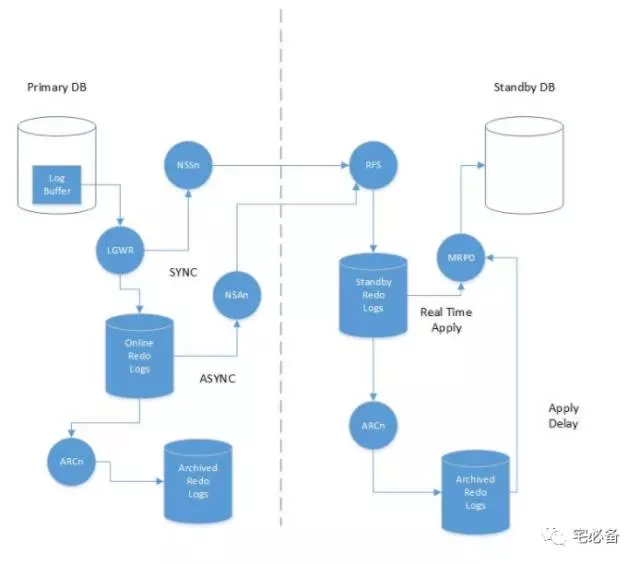
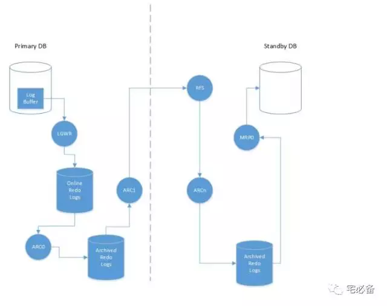

Oracle Data Guard 工作流程
从这期开始讲Oracle Data Guard方面的内容，先将基本的概念，然后介绍如何搭建Data Guard
Data Guard作为Oracle提供的一个高可用及灾备解决方案,理解并可以实施它对于DBA来说是非常重要套的技能
上节讲了一些Data Guard的一些概念和参数，这节讲述Data Guard整个的工作流程，更好的理解以后的配置
这节分2部分:
-
备库有SRL(Standby redo log)情形
-
备库无SRL(Standby redo log)情形
有Standby Redo Logs

主库端:
-
事务生成redo数据至log buffer
-
LGWR进程将log buffer的数据写入Online redo log
这里根据主库的保护模式redo数据有如下传输方式:
-
如果是最大保护模式，会使用SYNC模式传输，要求在redo data传输到所有路径后才可commit，使用Network Server SYNC(NSSn)进程传输redo data给备库的RFS( Remote File Server)进程
-
如果是最大性能模式,会使用ASYNC模式传输，不要求redo data实时传输到所有路径,Network Server ASYNC (NSAn)进程读取ORL数据并传输给备库的RFS进程
注意：NSSn在12c才出现，之前版本使用LNS 进程
备库端:
-
备库上的RFS进程将redo data 写入到 Standby redo log
-
接下来根据备库的应用模式，redo 应用有如下方式:
-
如果使用实时应用(Real Time Apply)模式，MRP0 进程直接从SLR里面读取redo data并应用
-
如果是非实时应用，MRP0会等待SRL归档完成或者达到delay的时间才会应用
无Standby Redo Logs

主库端:
-
事务生成redo数据至log buffer
-
LGWR进程将log buffer的数据写入Online redo log
-
当OLR填满或者切换时，归档进程(ARC0)会复制ORL到归档日志
-
接下来ARC1归档进程会将归档日志传输给备库的RFS进程
备库端:
-
备库的RFS进程读取传输过来的归档日志
-
备库的ARCn进程将读取的redo data重新归档在备库的归档路径
-
当归档完成，MRP0进程会读取归档日志的redo 数据在备库上应用
为什么需要使用SRL
从上面的介绍中，我们强烈推荐Data Guard 使用Standby redo log
-
可以做到实时同步主库数据，没有SRL只能等到日志切换时才可以应用日志
-
节省系统资源，从上面我们可以看出，没有SRL归档日志也不是单纯的拷贝至备库，也需要RFS进程读取并写入
关于备库的归档日志路径
从上面的流程可以看出无论有无SRL,实际上备库的归档日志文件是由备库进程产生的
所以主库不能控制备库的归档日志路径
-
11g之前由standby_archive_dest参数指定
-
从11g开始由LOG_ARCHIVE_DEST_n参数指定，如同时指定两者，则standby_archive_dest会生效
-
如都未设置Oracle会自动将standby_archive_dest设置为$ORACLE_HOME/dbs/arch 路径
好了，关于Oracle Data Guard的工作流程就这么多了，通过这节内容我们知道了具体的流程和使用SRL的好处
下节讲述如何搭建物理备库
本文参考自: